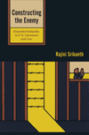
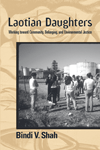
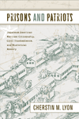
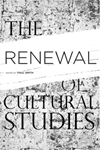

|
American Culture and Religious Diversity
A Saudi Perspective
Alhomoudi, Fahad
Chronicling the unique religious-based travels of a Muslim in America
176 pp • 6x9 • Fall 2011
paper 978-0-931214-13-4 |
|
An Immigrant Neighborhood
Interethnic and Interracial Encounters in New York before 1930
Yee, Shirley J.
How the crowded neighborhoods of New York's Lower East Side gave rise to cross-racial and cross ethnic bonds before 1930
256 pp • 5.5x8.25 • Fall 2011
paper 978-1-59213-128-0
cloth 978-1-59213-127-3 |
|
Body Language
Sisters in Shape, Black Women's Fitness, and Feminist Identity Politics
Lau, Kimberly J.
How Black women's engagement in improving health and fitness raises questions about feminism and the construction of black female identity
204 pp • 5.5x8.25 • Fall 2011
paper 978-1-4399-0309-4
cloth 978-1-4399-0308-7 |

|
The Borders of Justice
edited by Balibar, �tienne, Sandro Mezzadra and Ranabir Samaddar
Exploring the limits of and contradictions of transitional justice
224 pp • 6x9 • Fall 2011
cloth 978-1-4399-0685-9 |

|
Closure
The Rush to End Grief and What It Costs Us
Berns, Nancy
Do we really need closure after bad things happen?
228 pp • 6x9 • Fall 2011
paper 978-1-4399-0577-7
cloth 978-1-4399-0576-0
|
|
Club Modernity for Reluctant Christians
Swidler, Leonard
An invitation to reflect on the core values of spirituality
160 pp • 6x9 • Fall 2011
paper 978-0-931214-12-7 |
|
Community Gardening
A PHS Handbook
Pennsylvania Horticultural Society
How to build a community garden for all to share
132 pp • 8.5x8.5 • Fall 2011
paper 978-0-615-40150-8 |
 |
Constructing the Enemy
Empathy/Antipathy in U.S. Literature and Law
Srikanth, Rajini
An argument, based in history, law, literature, and philosophy, for empathy as an integral part of decisions about who will be designated an enemy of the state
220 pp • 6x9 • Fall 2011
paper 978-1-4399-0324-7
cloth 978-1-4399-0323-0 |
|
Creolizing Contradance in the Caribbean
edited by Manuel, Peter
How contradance and quadrille gave rise to merengue, danzón and other popular Creole dances
New in Paperback!
288 pp • 6x9 • Fall 2011
paper 978-1-59213-735-0 |
|
The Dance of Politics
Gender, Performance, and Democratization in Malawi
Gilman, Lisa
How gender and class intersect in Malawi through women's roles as political praise performers
New in Paperback!
268 pp • 6x9 • Fall 2011
paper 978-1-59213-986-6 |
|
Dangerous Trade
Histories of Industrial Hazard across a Globalizing World
edited by Sellers, Christopher and Joseph Melling
The first comprehensive survey of the global history of industrial hazards and their control
218 pp • 6x9 • Fall 2011
paper 978-1-4399-0469-5
cloth 978-1-4399-0468-8 |
|
The Disability Rights Movement
From Charity to Confrontation
Updated Edition
Fleischer, Doris Zames and Frieda Zames
A newly updated account of the struggle for disability rights in the U.S.
360 pp • 7x10 • Fall 2011
paper 978-1-4399-0744-3
cloth 978-1-4399-0743-6 |
|
The Ethics of Care
A Feminist Approach to Human Security
Robinson, Fiona
Applying feminist ethics to a comprehensive reworking of the theory of human security, addressing such issues as poverty, health, environment, conflict and peace building
200 pp • 5.5x8.25 • Fall 2011
paper 978-1-4399-0066-6
cloth 978-1-4399-0065-9 |
|
Hope Is Cut
Youth, Unemployment, and the Future in Urban Ethiopia
Mains, Daniel
A detailed look at young men in urban Ethiopia that reveals the impact of economic development and globalization
208 pp • 6x9 • Fall 2011
cloth 978-1-4399-0479-4 |
 |
Laotian Daughters
Working toward Community, Belonging, and Environmental Justice
Shah, Bindi V.
How environmental activism in youth shapes political engagement and citizenship for Laotian American women
216 pp • 6x9 • Fall 2011
paper 978-1-4399-0815-0
cloth 978-1-4399-0813-6 |
|
Merger Games
The Medical College of Pennsylvania, Hahnemann University, and the Rise and Fall of the Allegheny Health Care System
Swazey, Judith P., With the research collaboration of Carla M. Messikomer and the assistant of Vicki Leeman Hall and Judith C. Watkins
The story of one of the most public failures in healthcare consolidation
324 pp • 6x9 • Fall 2011
cloth 978-1-4399-0717-7 |
|
Multicultural Girlhood
Racism, Sexuality, and the Conflicted Spaces of American Education
Thomas, Mary E.
How high school girls perpetuate social spaces of racism, misogyny, and gender stereotyping despite their best intentions
216 pp • 6x9 • Fall 2011
paper 978-1-4399-0732-0
cloth 978-1-4399-0731-3 |
|
The Philly Fan's Code
The 50 Toughest, Craziest, Most Legendary Philadelphia Athletes of the Last 50 Years
Tanier, Mike
An original and quirky take on Philadelphia legends and the meaning of �tough athlete�
264 pp • 5.5x8.25 • Fall 2011
paper 978-1-4399-0599-9 |
 |
Prisons and Patriots
Japanese American Wartime Citizenship, Civil Disobedience, and Historical Memory
Lyon, Cherstin M.
Reexamining wartime definitions of citizenship, patriotism, prisons, and civil disobedience through the lives of Gordon Hirabayashi and the Tucsonians
256 pp • 6x9 • Fall 2011
paper 978-1-4399-0187-8
cloth 978-1-4399-0186-1 |
|
The Production of Living Knowledge
The Crisis of the University and the Transformation of Labor in Europe and North America
Roggero, Gigi, foreword by Enda Brophy
How universities in Europe and North America are run like factories and how this affects academic workers
214 pp • 5.5x8.25 • Fall 2011
cloth 978-1-4399-0573-9 |
|
The Protestant Ethic Revisited
Gorski, Philip S.
Essays on the contradictory resurgence of religion and liberalism in the twenty-first century by one of the most important voices in the study of the sociology of religion
342 pp • 6x9 • Fall 2011
cloth 978-1-4399-0189-2
|
|
Reading Up
Middle-Class Readers and the Culture of Success in the Early Twentieth-Century United States
Blair, Amy L.
The role of cultural elites and journalists in promoting reading as a means of self-improvement and social mobility
264 pp • 6x9 • Fall 2011
paper 978-1-4399-0668-2
cloth 978-1-4399-0667-5 |
|
Refounding Environmental Ethics
Pragmatism, Principle, and Practice
Minteer, Ben A.
Explains environmental pragmatism and shows how to apply it to real world issues
212 pp • 6x9 • Fall 2011
paper 978-1-4399-0084-0
cloth 978-1-4399-0083-3 |
 |
The Renewal of Cultural Studies
edited by Smith, Paul
A collective manifesto for the future of Cultural Studies
272 pp • 6x9 • Fall 2011
paper 978-1-4399-0253-0
cloth 978-1-4399-0252-3 |
|
Saving San Francisco
Relief and Recovery after the 1906 Disaster
Davies, Andrea Rees
How the relief and rebuiliding efforts after the 1906 disaster reproduced the class and racial divisions of pre-quake San Francisco
232 pp • 6x9 • Fall 2011
paper 978-1-4399-0433-6
cloth 978-1-4399-0432-9 |
|
St. Peter's Church
Faith in Action for 250 Years
Biddle, Cordelia Frances, Elizabeth S. Brown, Alan J. Heavens and Charles P. Peitz
A history of the second-oldest Episcopal Church in Philadelphia, published in honor of its 250th anniversary
264 pp • 8x10 • Fall 2011
cloth 978-1-43990-795-5 |
|
Sweating Saris
Indian Dance as Transnational Labor
Srinivasan, Priya
Seeing Indian dancers as gendered labor highlights the politics of Asian American racialization, migration, and citizenship
238 pp • 6x9 • Fall 2011
paper 978-1-4399-0430-5
cloth 978-1-4399-0429-9 |

|
Troubling Gender
Youth and Cumbia in Argentina's Music Scene
Vila, Pablo and Pablo Sem�n, contributions by Elo�sa Mart�n and Mar�a Julia Carozzi
How cumbia villera and Argentine popular culture reshape and reflect the changes in gender relations among the country's underclass youth
230 pp • 6x9 • Fall 2011
paper 978-1-4399-0267-7
cloth 978-1-4399-0266-0 |
|
Tutoring Matters
Everything You Always Wanted to Know about How to Tutor
Second Edition
Chin, Tiffani, Jerome Rabow and Jeimee Estrada
The authoritative manual for both the aspiring and seasoned tutor
240 pp • 5.5x8.25 • Fall 2011
paper 978-1-4399-0741-2
cloth 978-1-4399-0740-5 |
|
Vodou Songs in Haitian Creole and English
Hebblethwaite, Benjamin
The first comprehensive collection of Vodou sacred literature in bilingual form
396 pp • 6x9 • Fall 2011
paper 978-1-4399-0602-6
cloth 978-1-4399-0601-9 |

|
Why Our Drug Laws Have Failed and What We Can Do About It
A Judicial Indictment of the War on Drugs
Second Edition
Gray, James P.
A forceful argument for why we need to repeal drug prohibition
304 pp • 6x9 • Fall 2011
paper 978-1-4399-0799-3
cloth 978-1-4399-0798-6 |

|
Youth Violence
Sex and Race Differences in Offending, Victimization, and Gang Membership
Esbensen, Finn-Aage, Dana Peterson, Terrance J. Taylor and Adrienne Freng
The first comprehensive overview to examine how sex and race/ethnicity impact the interrelationships among youth violence, violent victimization, and gang membership
New in Paperback!
244 pp • 6x9 • Fall 2011
paper 978-1-43990-072-7 |
Click here
to download the catalog (pdf). |